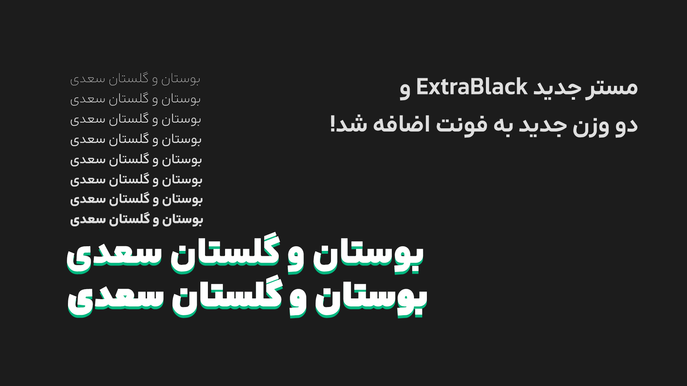
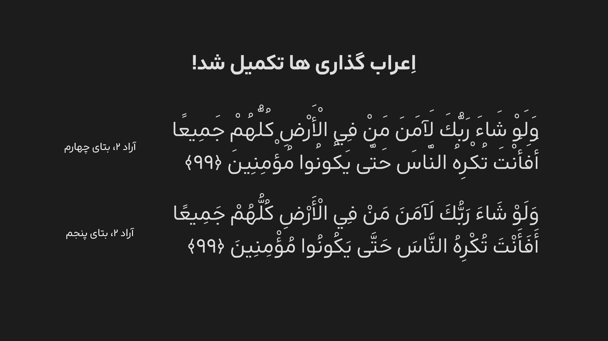

بتای پنجم نسخۀ دوم آراد منتشر شد!
۲۵ مهر ۱۴۰۴ • نوشته شده توسط محمد درویشی
مستر جدید ExtraBlack به فونت اضافه شد، و دو وزن جدید هم به فونت افزوده شده. اِعراب گذاری ها، حالا تکمیل شدن و خیلی بهتر از گذشته عمل میکنن. طراحی بسیاری از حروف و اعداد تو مستر ExtraBold تغییرات جزئی داشتن. کرنینگ ها، جایگزین های شرطی چند تغییر جزئی داشتن.
- مستر سنگین ExtraBlack و دو وزن جدید به فونت اضافه شد!

- اعرابگذاری ها تکمیل شد.

- طراحی بسیاری از حروف و اعداد مخصوصاً در مستر ExtraBold تغییر کرد. مثل کاف م اً
- بعضی از حروف برای بهبود در وزن های سنگین فرضی، در anchor ها و handle ها، دچار تغییراتی شدند که ممکن است تاثیر محسوسی بر طراحی حرف نداشته باشد.
- فاصلۀ بین خطوط بیشتر شد.
- کرنینگ ها، دچار تغییرات جزئی شدند.
- بعضی جایگزین های شرطی، تغییر جزئی کردند.
- فرم نقطۀ چهار، به دلیل استفاده کم، مناسب نبودن برای شخصیت فونت، و مطابق نبودن با استاندارد های وزن های سنگینتر، از فونت حذف شد.
- باگ های مختلف برطرف شد.
و تغییرات دیگری، که در اینجا اشاره نشدند.
برای دانلود این نسخه، به این پیوند مراجعه کنید.